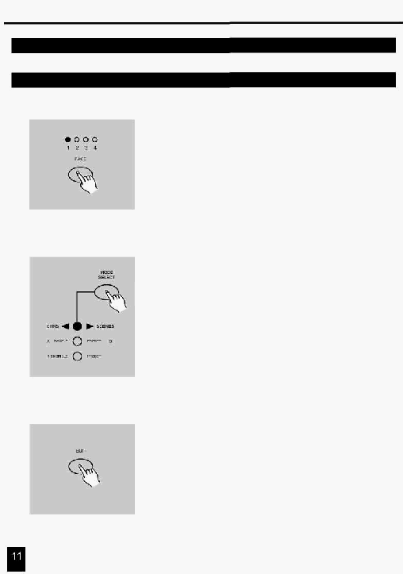

2. Опис інструкцій
2.2 Редагування
2.2.1 Редагування Програми
1.
Виконайте процедуру Дозвіл Запису.
2.
Використовуючи кнопку Page виберіть сторінку на якій
розміщена Програма, що Ви бажаєте редагувати.
3. Натисніть кнопку Mode Select і виберіть
CHNS < > SCENES.
4. Натисніть й утримуйте кнопку Edit.